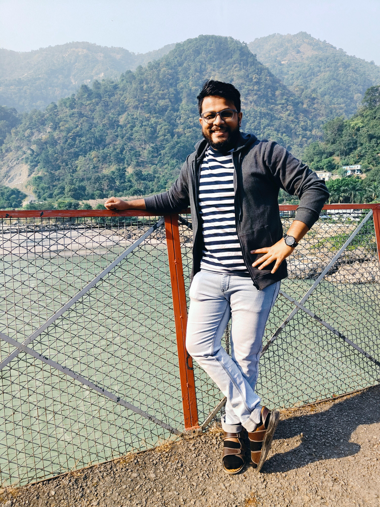

I am a Senior Research Fellow and Ph.D. candidate at the Indian Statistical Institute, Kolkata, specializing in statistical physics. My research primarily explores stochastic resetting, first-passage processes, synchronization dynamics, the Kuramoto model, and swarmalators. I focus on developing analytical and computational frameworks to understand complex systems and transport phenomena.
| Name & Title | Institution | Contact |
|---|---|---|
| Prof. Dibakar Ghosh Professor |
Indian Statistical Institute, Kolkata | dibakar@isical.ac.in diba.ghosh@gmail.com |
| Dr. Arnab Pal Reader |
Institute of Mathematical Sciences, Chennai | arnabpal@imsc.res.in richard86arnab@gmail.com |